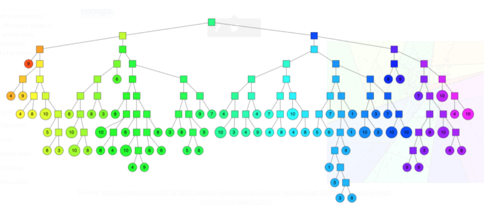

Approximate Nearest Neighbor
Overview
The idea of ANN is to search for points in space that are close to a given query point
Recommendation Engines
Search/Ranking
Why ANN?
For finding k nearest neighbors in a vector space, it has linear complexity via brute force in the number of indexed documents and can be extremely costly, compute wise because the retrieved results are exact.
Instead, we can approximate results retrieved in sub-linear time.
ANNOY
Spotify developed an open-source library “ANNOY” which helps the team search millions of tracks in a high dimensional space for similar users/items/
ANNOY is a python package that uses a random hyperplane splitting approach to build up a forest of search trees to efficiently calculate the nearest neighbours.
Annoy has the ability to use static files as indexes which means you can share index across processes and the indexes can be loaded into memory very quickly.
An n index is built with a forest of k trees, where “k” is a tunable parameter that trades off between precision and performance.
How does it work:
In order to construct the index a forest is created (aka many trees).
Each binary tree is constructed in the following way:
1.) We pick two points at random and split the space into two by their hyperplane
2.) We keep splitting in the subspaces recursively until the points associated with a node are small enough.
3.) We end up with a binary tree that partitions the space. The nice thing is that points that are close to each other in space are more likely to be close to each other in the tree.
In other words: if two points are close to each other in space, it’s unlikely that any hyperplane will cut them apart.
To search for any point in this space, we can traverse the binary tree from the root.
Every intermediate node (the small squares in the tree above) defines a hyperplane, so we can figure out what side of the hyperplane we need to go on and that defines if we go down to the left or right child node.
Searching for a point can be done in logarithmic time since that is the height of the tree.

Similarity Query
Example of using
Word2VecwithANNOYto understand context of queryReference: https://markroxor.github.io/gensim/static/notebooks/annoytutorial.html